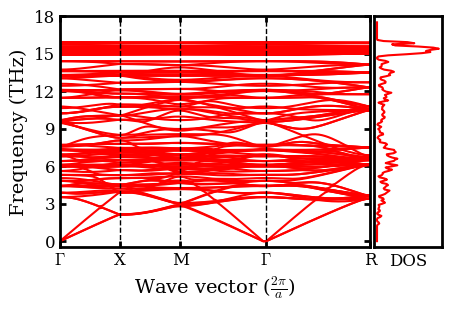
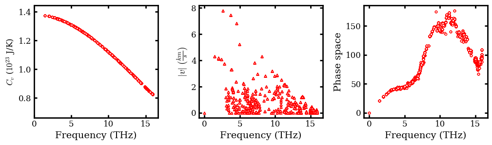
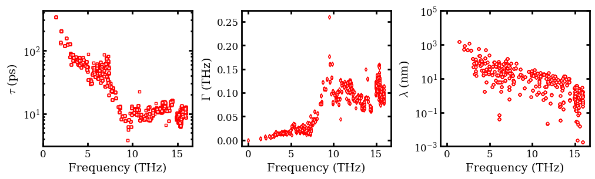
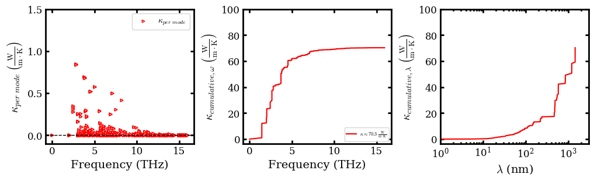

Silicon Clathrate Tersoff Lammps¶
Anharmonic Lattice Dynamics (ALD) for \(\ce{Si46}\) with Tersoff¶
Import Necessary Packges¶
[1]:
from ase.io import read
from pylab import *
import warnings
warnings.filterwarnings("ignore")
Custom Define Functions¶
[2]:
def cumulative_cond_cal(observables, kappa_tensor, prefactor=1/3):
"""Compute cumulative conductivity based on either frequency or mean-free path
input:
observables: (ndarray) either phonon frequency or mean-free path
cond_tensor: (ndarray) conductivity tensor
prefactor: (float) prefactor to average kappa tensor, 1/3 for bulk material
output:
observables: (ndarray) sorted phonon frequency or mean-free path
kappa_cond (ndarray) cumulative conductivity
"""
# Sum over kappa by directions
kappa = np.einsum('maa->m', prefactor * kappa_tensor)
# Sort observables
observables_argsort_indices = np.argsort(observables)
cumulative_kappa = np.cumsum(kappa[observables_argsort_indices])
return observables[observables_argsort_indices], cumulative_kappa
def set_fig_properties(ax_list, panel_color_str='black', line_width=2):
tl = 4
tw = 2
tlm = 2
for ax in ax_list:
ax.tick_params(which='major', length=tl, width=tw)
ax.tick_params(which='minor', length=tlm, width=tw)
ax.tick_params(which='both', axis='both', direction='in',
right=True, top=True)
ax.spines['bottom'].set_color(panel_color_str)
ax.spines['top'].set_color(panel_color_str)
ax.spines['left'].set_color(panel_color_str)
ax.spines['right'].set_color(panel_color_str)
ax.spines['bottom'].set_linewidth(line_width)
ax.spines['top'].set_linewidth(line_width)
ax.spines['left'].set_linewidth(line_width)
ax.spines['right'].set_linewidth(line_width)
for t in ax.xaxis.get_ticklines(): t.set_color(panel_color_str)
for t in ax.yaxis.get_ticklines(): t.set_color(panel_color_str)
for t in ax.xaxis.get_ticklines(): t.set_linewidth(line_width)
for t in ax.yaxis.get_ticklines(): t.set_linewidth(line_width)
Denote Latex Font for Plots¶
[3]:
# Denote plot default format
aw = 2
fs = 12
font = {'size': fs}
matplotlib.rc('font', **font)
matplotlib.rc('axes', linewidth=aw)
# Configure Matplotlib to use a LaTeX-like style without LaTeX
plt.rcParams['text.usetex'] = False
plt.rcParams['font.family'] = 'serif'
plt.rcParams['mathtext.fontset'] = 'cm'
Plot Phonon Spectra (Dispersion) and Density of State (DOS)¶
[4]:
data_folder = './'
# Derive symbols for high symmetry directions in Brillouin zone
dispersion = np.loadtxt(data_folder + 'plots/3_3_3/dispersion')
point_names = np.loadtxt(data_folder + 'plots/3_3_3/point_names', dtype=str)
point_names_list = []
for point_name in point_names:
if point_name == 'G':
point_name = r'$\Gamma$'
elif point_name == 'U':
point_name = 'U=K'
point_names_list.append(point_name)
# Load in the "tick-mark" values for these symbols
q = np.loadtxt(data_folder + 'plots/3_3_3/q')
Q = np.loadtxt(data_folder + 'plots/3_3_3/Q_val')
# Load in grid and dos individually
dos_Ge = np.load(data_folder + 'plots/3_3_3/dos.npy')
# Plot dispersion
fig = figure(figsize=(4,3))
set_fig_properties([gca()])
plot(q[0], dispersion[0, 0], 'r-', ms=1)
plot(q, dispersion, 'r-', ms=1)
for i in range(1, 4):
axvline(x=Q[i], ymin=0, ymax=2, ls='--', lw=1, c="k")
#axhline(y =0, ls = '--', c='k', lw=1)
ylabel('Frequency (THz)', fontsize=14)
xlabel(r'Wave vector ($\frac{2\pi}{a}$)', fontsize=14)
gca().set_yticks(np.arange(0, 21, 3))
xticks(Q, point_names_list)
ylim([-0.5, 18])
xlim([Q[0], Q[4]])
dosax = fig.add_axes([0.91, .11, .17, .77])
set_fig_properties([gca()])
# Plot per projection
for d in np.expand_dims(dos_Ge[1],0):
dosax.plot(d, dos_Ge[0],c='r')
dosax.set_yticks([])
dosax.set_xticks([])
dosax.set_xlabel("DOS")
ylim([-0.5, 18])
show()

Plot Heat Capacity, Group Velocities and Phase Space¶
[5]:
# Load in group velocity, heat_capacity (cv) and frequency data
frequency = np.load(
data_folder + 'ALD_Si46/3_3_3/frequency.npy',
allow_pickle=True)
cv = np.load(
data_folder + 'ALD_Si46/3_3_3/300/quantum/heat_capacity.npy',
allow_pickle=True)
group_velocity = np.load(
data_folder + 'ALD_Si46/3_3_3/velocity.npy')
phase_space = np.load(data_folder +
'ALD_Si46/3_3_3/300/quantum/_ps_and_gamma.npy',
allow_pickle=True)[:,0]
# Compute norm of group velocity
# Convert the unit from angstrom / picosecond to kilometer/ second
group_velcotiy_norm = np.linalg.norm(
group_velocity.reshape(-1, 3), axis=1) / 10.0
# Plot observables in subplot
figure(figsize=(12, 3))
subplot(1,3, 1)
set_fig_properties([gca()])
scatter(frequency.flatten(order='C')[3:], 1e23*cv.flatten(order='C')[3:],
facecolor='w', edgecolor='r', s=10, marker='8')
ylabel (r"$C_{v}$ ($10^{23}$ J/K)")
xlabel('Frequency (THz)', fontsize=14)
ylim(0.8*1e23*cv.flatten(order='C')[3:].min(), 1.05*1e23*cv.flatten(order='C')[3:].max())
gca().set_xticks(np.arange(0, 20, 5))
subplot(1 ,3, 2)
set_fig_properties([gca()])
scatter(frequency.flatten(order='C'),
group_velcotiy_norm, facecolor='w', edgecolor='r', s=10, marker='^')
xlabel('Frequency (THz)', fontsize=14)
ylabel(r'$|v| \ (\frac{km}{s})$', fontsize=14)
subplot(1 ,3, 3)
set_fig_properties([gca()])
scatter(frequency.flatten(order='C'),
phase_space, facecolor='w', edgecolor='r', s=10, marker='o')
xlabel('Frequency (THz)', fontsize=14)
ylabel('Phase space', fontsize=14)
subplots_adjust(wspace=0.33)
show()

#### Plot Phonon Life Time (\(\tau\)), Scattering Rate (\(\Gamma\)) and Mean Free Path (\(\lambda\))
Note that \(\Gamma\) and \(\tau\) are computed only with the relaxation time approximation (RTA).
[6]:
# Load in scattering rate
scattering_rate = np.load(
data_folder +
'ALD_Si46/3_3_3/300/quantum/bandwidth.npy', allow_pickle=True)
# Derive lifetime, which is inverse of scattering rate
life_time = scattering_rate ** (-1)
# Denote lists to intake mean free path in each direction
mean_free_path = []
for i in range(3):
mean_free_path.append(np.loadtxt(
data_folder +
'ALD_Si46/3_3_3/rta/300/quantum/mean_free_path_' +
str(i) + '.dat'))
# Convert list to numpy array and compute norm for mean free path
# Convert the unit from angstrom to nanometer
mean_free_path = np.array(mean_free_path).T
mean_free_path_norm = np.linalg.norm(
mean_free_path.reshape(-1, 3), axis=1) / 10.0
# Plot observables in subplot
figure(figsize=(12, 3))
subplot(1,3, 1)
set_fig_properties([gca()])
scatter(frequency.flatten(order='C'),
life_time, facecolor='w', edgecolor='r', s=10, marker='s')
gca().set_xticks(np.arange(0, 20, 5))
yscale('log')
ylabel(r'$\tau$ (ps)', fontsize=14)
xlabel('Frequency (THz)', fontsize=14)
subplot(1,3, 2)
set_fig_properties([gca()])
scatter(frequency.flatten(order='C'),
scattering_rate, facecolor='w', edgecolor='r', s=10, marker='d')
ylabel(r'$\Gamma$ (THz)', fontsize=14)
xlabel('Frequency (THz)', fontsize=14)
subplot(1,3, 3)
set_fig_properties([gca()])
scatter(frequency.flatten(order='C'),
mean_free_path_norm, facecolor='w', edgecolor='r', s=10, marker='8')
ylabel(r'$\lambda$ (nm)', fontsize=14)
xlabel('Frequency (THz)', fontsize=14)
yscale('log')
ylim([1e-3, 1e5])
subplots_adjust(wspace=0.33)
show()

Plot per mode and cumulative \(\kappa\)¶
[7]:
# Denote zeros to intake kappa tensor
kappa_tensor = np.zeros([mean_free_path.shape[0], 3, 3])
for i in range(3):
for j in range(3):
kappa_tensor[:, i, j] = np.loadtxt(data_folder +
'ALD_Si46/3_3_3/rta/300/quantum/conductivity_' +
str(i) + '_' + str(j) + '.dat')
# Sum over the 0th dimension to recover 3-by-3 kappa matrix
kappa_matrix = kappa_tensor.sum(axis=0)
print("Bulk thermal conductivity: %.1f W m^-1 K^-1\n"
%np.mean(np.diag(kappa_matrix)))
print("kappa matrix: ")
print(kappa_matrix)
print('\n')
# Compute kappa in per mode and cumulative representations
kappa_per_mode = kappa_tensor.sum(axis=-1).sum(axis=1)
freq_sorted, kappa_cum_wrt_freq = cumulative_cond_cal(
frequency.flatten(order='C'), kappa_tensor)
lambda_sorted, kappa_cum_wrt_lambda = cumulative_cond_cal(
mean_free_path_norm, kappa_tensor)
# Plot observables in subplot
figure(figsize=(12, 3))
subplot(1,3, 1)
set_fig_properties([gca()])
scatter(frequency.flatten(order='C'),
kappa_per_mode, facecolor='w', edgecolor='r', s=10, marker='>', label='$\kappa_{per \ mode}$')
axhline(y =0, ls = '--', c='k', lw=1)
ylabel(r'$\kappa_{per \ mode}\;\left(\frac{\rm{W}}{\rm{m}\cdot\rm{K}}\right)$',fontsize=14)
xlabel('Frequency (THz)', fontsize=14)
legend(loc=1, fontsize=10)
ylim([-0.1, 1.5])
subplot(1,3, 2)
set_fig_properties([gca()])
plot(freq_sorted, kappa_cum_wrt_freq, 'r',
label=r'$\kappa \approx 70.3 \;\frac{\rm{W}}{\rm{m}\cdot\rm{K}} $')
gca().set_yticks(np.arange(0, 120, 20))
ylabel(r'$\kappa_{cumulative, \omega}\;\left(\frac{\rm{W}}{\rm{m}\cdot\rm{K}}\right)$',fontsize=14)
xlabel('Frequency (THz)', fontsize=14)
legend(loc=4, fontsize=6)
subplot(1,3, 3)
set_fig_properties([gca()])
plot(lambda_sorted, kappa_cum_wrt_lambda, 'r')
gca().set_yticks(np.arange(0, 120, 20))
xlabel(r'$\lambda$ (nm)', fontsize=14)
ylabel(r'$\kappa_{cumulative, \lambda}\;\left(\frac{\rm{W}}{\rm{m}\cdot\rm{K}}\right)$',fontsize=14)
xscale('log')
xlim([1e0, 3e3])
subplots_adjust(wspace=0.33)
show()
Bulk thermal conductivity: 70.3 W m^-1 K^-1
kappa matrix:
[[ 6.99077813e+01 4.36618100e-02 2.47141838e-01]
[ 4.36618100e-02 7.04762734e+01 -1.42142784e-02]
[ 2.47141838e-01 -1.42142784e-02 7.06446778e+01]]
